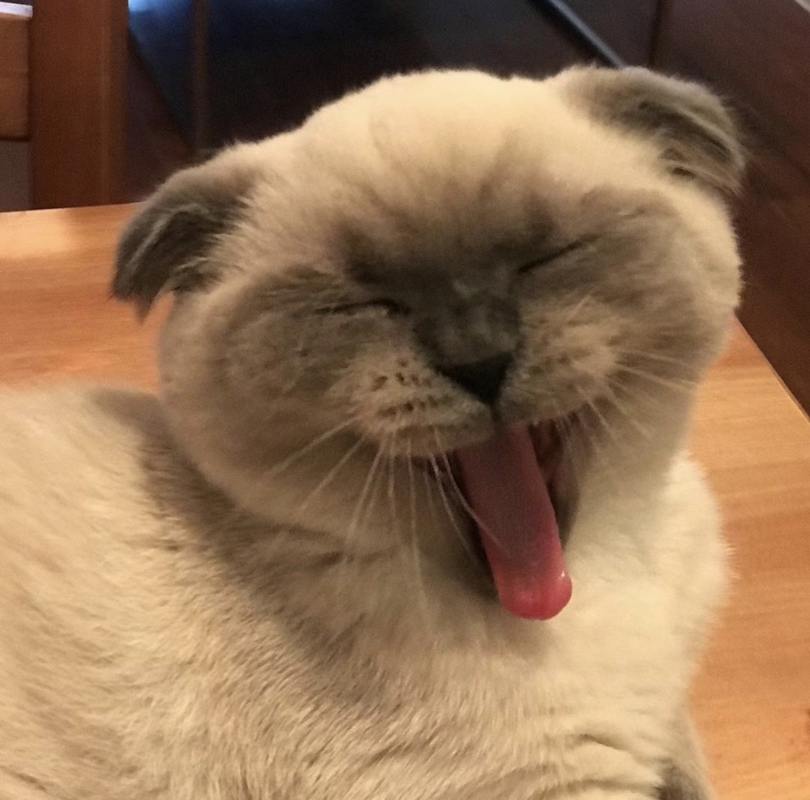

All About Me
What is your name?
Hunter Marrs
Where are you from?
Las Vegas, NV
When is your birthday?
November 30th
Why did you choose to study Communication Design?
It's relevant and realistic while still providing creative freedom in work.
What are you most inspired by?
Films and visual books.
What has been your favorite class so far? Why?
Filmmaking/Analog Film because I enjoy the slow process of shooting and developing film.
What are you hoping to learn in this class?
Actually enjoying coding and creating content that I am interested in.
What do you like to do in your spare time?
Watch movies, take photos, eat with friends.
When you imagine a graphic designer, what do you think they do on a day to day?
Working freelance or for a creative agency, having commissioned clients for a variety of projects (web design, package design, branding, etc.)
When you imagine a developer, what do you think they do on a day to day?
Working freelance or for a creative agency, having commissioned clients for a variety of projects but having more restriction on medium.
Where do you see yourself after graduating? What kind of job do you want to have?
Being broke, not sure what job I want to have.
Do you consider yourself an artist, a designer, both, or neither?
No idea.
What kind of design classes have you taken before this one?
None in high school, only at The New School
Do you know most of the students in our class already?
Not yet but soon.
List your favorite typefaces.
- Helvetica (usually in all caps)
- GT Alpina
- Boulevard LAB typefaces (Sometimes, George Display, Office Times)
What are you top 3 favorite colors?
Which artists do you like?
Hugo Comte, Wolfgang Tillmans, Richard Linklater
List out some music that you like to listen to
Next question.
Did anything interesting happen over winter break?
Watched the entire Harry Potter series out of order.
Have you ever built a website?
A mock website for a photography museum.
Do you have any questions for me?
How was your experience at the New School? Has it changed since then?
What is your first memory of using the internet?
Playing Nickelodeon basketball and overheating the computer.
Do you have a favorite place to visit?
I enjoy Central Park in the Summer and my grandparents house any season.
Do you speak any other languages?
Sadly not yet.
What is your favorite food?
Don't have a favorite, but could eat pasta every day.
What is your favorite animal?
Cat 🐱
Do you have a pet?
Scottish Fold cat named Goober

Is there any other information you’d like me to know?
No 🚫